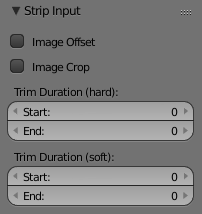

片段输入面板¶
参考
- 面板

片段输入设置。¶
片段输入面板用于控制片段源，持续时间以及一些基本变换。
- 路径
一个文本字段，可让你编辑/更新片段使用的文件的路径。当你移动文件时，它避免了必须删除和重新创建片段。
- 文件
与以前相同，但如果你重命名源文件，则可以检索它（或更改它）。
- 色彩空间
指定源文件的色彩空间。
- Alpha 模式
如果源文件具有Alpha（透明度）通道，则可以选择：
- 更改数据/文件
与 路径 和 文件 字段相同，但这次合并打开文件浏览器以查找你搜索的文件。
- FFMPEG 预搜索
仅适用于电影片段 - 使用 预搜索（Preseek）字段告诉Blender向后看，并根据前n帧（例如15为Mpeg2 DVD）合成。
- 流索引
仅适用于电影片段 - 对于具有多个电影流的文件，请使用具有给定索引的流。
- 图像偏移
用于沿X和Y轴平移帧。此外，它禁用图像的自动缩放。
- 图像裁切
用于裁剪源图像，使用 顶部，左边，底部 和 右边 来控制图像的哪一部分被裁剪。
- 修剪持续时间（硬）
控制片段的来源在什么帧开始和结束。
- 修剪持续时间（软）
通过重复最后一帧，可以用来延长超出结束帧的长度。或者它可以用来缩短片段，就好像你在裁剪帧。这是相同的调整片段手柄。